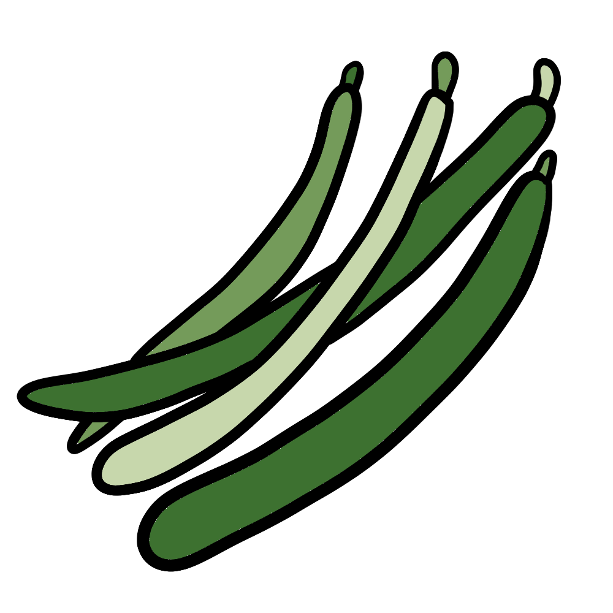

How to grow Green Beans
A Step by step Guide
Green beans are a fast-growing, nutritious crop that thrives in warm weather. They require minimal maintenance and can be grown in small spaces, making them perfect for home gardens or container planting. Whether you're growing bush green beans or pole green beans, follow this guide to cultivate a bountiful harvest of fresh green beans.
Difficulty Rating: Easy
Best Season to Grow: Spring and Summer
Can Be Grown: Both Indoors and Outdoors
Supplies Needed to Grow Green Beans
Green bean seeds (bush or pole varieties)
Well-draining, nutrient-rich soil
Compost or balanced fertilizer (10-10-10)
Garden trowel
Watering can or hose
Mulch (straw, leaves, or wood chips)
Raised garden bed or deep containers (for small spaces)
Trellis or stakes (for pole green beans)
Setting Up Your Green Beans Garden
Choosing the Right Location
Sunlight: Green beans thrive in full sun, requiring at least 6-8 hours of direct sunlight per day.
Soil: Use loose, well-draining soil rich in organic matter, with a pH between 6.0 and 7.0.
Spacing: Plant bush green beans 2-4 inches apart and pole green beans 4-6 inches apart in rows spaced 18 inches apart.
Indoor Setup: If growing indoors, use deep containers (at least 12 inches deep) with a trellis for climbing varieties.
Preparing the Soil
Loosen the soil to a depth of at least 12 inches to encourage strong root growth.
Mix compost into the soil to provide essential nutrients.
Avoid overly rich soils with excessive nitrogen, as this can lead to excessive leaf growth with fewer beans.
Planting Green Beans
Direct Sowing: Green beans grow best when directly sown into the soil after the last frost.
Planting Depth: Bury seeds 1 inch deep and cover them lightly with soil.
Support for Pole Green Beans: Install a trellis or stakes at planting time to provide climbing support.
Caring for Your Green Beans Plants

Watering
Keep the soil evenly moist but not waterlogged, providing 1 inch of water per week.
Water at the base of the plant to prevent fungal diseases.

Fertilizing
Green beans typically require little fertilizer since they fix nitrogen in the soil.
If needed, apply a low-nitrogen fertilizer once during early growth.

Mulching & Weed Control
Apply a layer of mulch to retain moisture and suppress weeds.
Remove weeds carefully to avoid disturbing green bean roots.

Pest and Disease Prevention
Watch for pests such as aphids, bean beetles, and spider mites.
Use neem oil or insecticidal soap to deter pests.
Rotate crops yearly to prevent soil-borne diseases like rust and bacterial blight.

Harvesting
Green beans are ready to harvest in 50-70 days, depending on the variety.
Pick beans when they are firm and snap easily, before they become overly mature.
Regular harvesting encourages plants to produce more beans throughout the season.
By following these steps, you can successfully grow green beans and enjoy a continuous harvest of fresh, homegrown produce. Happy gardening! 🌱